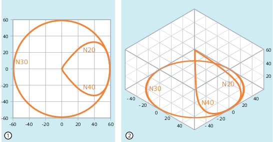

If tool radius compensation is active (G41/G42), G Group 17 commands (NORM, KONT, KONTC or KONTT) can be used to adapt the approach and retract paths of the tool to the required contour profile or the shape of the blank (unmachined part).
KONTC or KONTT ensure that continuity conditions are maintained in all three axes. It is, therefore, permissible to program a path component perpendicular to the offset plane simultaneously.
| Note |
|
A license is required for option "Polynomial interpolation" in order to use KONTC and KONTT. |
| G41/G42 NORM/KONT/KONTC/KONTT X... Y... Z... | |
| ... | |
| G40 X... Y... Z... |
| Activate direct approach/retraction to/from a straight line. The tool is oriented perpendicular to the contour point. |
| Activate approach/retract with travel around the starting/end point The tool travels around the starting point either along a circular path or over the intersection of the equidistants depending on the programmed corner behavior (G450/G451). |
| Activate approach/retraction with constant curvature. The contour point is approached/exited with constant curvature. There is no jump in the acceleration at the contour point. |
| Activate approach/retraction with constant tangent. The contour point is approached/exited with constant tangent. A jump in the acceleration can occur at the contour point. |
| Note |
Only G1 blocks are permissible as original approach/retract blocks for KONTC and KONTT. The control replaces these with polynomials for the appropriate approach/retract path. |
KONTT and KONTC are not available in 3D variants of tool radius compensation (CUT3DC, CUT3DCC, CUT3DF). If they are programmed, the control switches internally to NORM without an error message.
In the following program example, a full circle with a radius of 70 mm is machined in the X/Y plane. The tool approaches/retracts with KONTC:
| Program code | Comment |
|---|---|
| $TC_DP1[1,1]=121 | ; Milling tool |
| $TC_DP6[1,1]=10 | ; Radius 10 mm |
| N10 G1 X0 Y0 Z60 G64 T1 D1 F10000 | |
| N20 G41 KONTC X70 Y0 Z0 | ; Approach |
| N30 G2 I-70 | ; Full circle |
| N40 G40 G1 X0 Y0 Z60 | ; Retract |
| N50 M30 |
As the tool has a radius of 10 mm, the resulting tool center point path describes a circle with a radius of 60 mm. Start and end point are at X0 Y0 Z60. When approaching the full-circle with KONTC (N20), the curvature is adapted to the circular path of the full circle. At the same time, the axis traverses from Z60 to the plane of circle Z0. The axis retracts (N40) in the same fashion.
① | Perpendicular projection |
② | Spatial representation |
Tool path
See also:
Adapting the approach/retract response (NORM, KONT, KONTC, KONTT): More information
Activating/deactivating tool radius compensation (G40, G41, G42, OFFN):